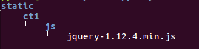

布署
- 从uwsgi、nginx、静态文件三个方面处理
服务器介绍
- 服务器：私有服务器、公有服务器
- 私有服务器：公司自己购买、自己维护，只布署自己的应用，可供公司内部或外网访问
- 公有服务器：集成好运营环境，销售空间或主机，供其布署自己的应用
- 私有服务器成本高，需要专业人员维护，适合大公司使用
- 公有服务器适合初创公司使用，成本低
- 常用的公有服务器，如阿里云、青云等，可根据需要，按流量收费或按时间收费
- 此处的服务器是物理上的一台非常高、线路全、运行稳定的机器
服务器环境配置
- 在本地的虚拟环境中，项目根目录下，执行命令收集所有包
pip freeze > plist.txt
- 通过ftp软件将开发好的项目上传到此服务器的某个目录
- 安装并创建虚拟环境，如果已有则跳过此步
sudo apt-get install python-virtualenv
sudo easy_install virtualenvwrapper
mkvirtualenv [虚拟环境名称]
- 在虚拟环境上工作，安装所有需要的包
workon [虚拟环境名称]
pip install -r plist.txt
- 更改settings.py文件
DEBUG = False
ALLOW_HOSTS=['*',]表示可以访问服务器的ip
- 启动服务器，运行正常，但是静态文件无法加载
WSGI
- python manage.py runserver：这是一款适合开发阶段使用的服务器，不适合运行在真实的生产环境中
- 在生产环境中使用WSGI
- WSGI：Web服务器网关接口，英文为Python Web Server Gateway Interface，缩写为WSGI，是Python应用程序或框架和Web服务器之间的一种接口，被广泛接受
- WSGI没有官方的实现, 因为WSGI更像一个协议，只要遵照这些协议,WSGI应用(Application)都可以在任何服务器(Server)上运行
- 命令django-admin startproject会生成一个简单的wsgi.py文件，确定了settings、application对象
- application对象：在Python模块中使用application对象与应用服务器交互
- settings模块：Django需要导入settings模块，这里是应用定义的地方
- 此处的服务器是一个软件，可以监听网卡端口、遵从网络层传输协议，收发http协议级别的数据
uWSGI
- uWSGI实现了WSGI的所有接口，是一个快速、自我修复、开发人员和系统管理员友好的服务器
- uWSGI代码完全用C编写
- 安装uWSGI
pip install uwsgi
- 配置uWSGI，在项目中新建文件uwsgi.ini，编写如下配置
[uwsgi]
socket=外网ip:端口（使用nginx连接时，使用socket）
http=外网ip:端口（直接做web服务器，使用http）
chdir=项目根目录
wsgi-file=项目中wsgi.py文件的目录，相对于项目根目录
processes=4
threads=2
master=True
pidfile=uwsgi.pid
daemonize=uswgi.log
- 启动：uwsgi --ini uwsgi.ini
- 停止：uwsgi --stop uwsgi.pid
- 重启：uwsgi --reload uwsgi.pid
- 使用http协议查看网站运行情况，运行正常，但是静态文件无法加载
nginx
- 使用nginx的作用
- 负载均衡：多台服务器轮流处理请求
- 反射代理：隐藏真实服务器
- 实现构架：客户端请求nginx，再由nginx请求uwsgi，运行django框架下的python代码
- nginx+uwsgi也可以用于其它框架的python web代码，不限于django
- 到官网下载nginx压缩文件或通过命令安装
sudo apt-get nginx
- 这里以下载压缩文件为例演示
解压缩：
tar zxvf nginx-1.6.3.tar.gz
进入nginx-1.6.3目录依次执行如下命令进行安装：
./configure
make
sudo make install
- 默认安装到/usr/local/nginx目录，进入此目录执行命令
- 查看版本：sudo sbin/nginx -v
- 启动：sudo sbin/nginx
- 停止：sudo sbin/nginx -s stop
- 重启：sudo sbin/nginx -s reload
- 通过浏览器查看nginx运行结果
- 指向uwsgi项目：编辑conf/nginx.conf文件
sudo conf/nginx.conf
在server下添加新的location项，指向uwsgi的ip与端口
location / {
include uwsgi_params;将所有的参数转到uwsgi下
uwsgi_pass uwsgi的ip与端口;
}
- 修改uwsgi.ini文件，启动socket，禁用http
- 重启nginx、uwsgi
- 在浏览器中查看项目，发现静态文件加载不正常，接下来解决静态文件的问题
静态文件
- 静态文件一直都找不到，现在终于可以解决了
- 所有的静态文件都会由nginx处理，不会将请求转到uwsgi
- 配置nginx的静态项，打开conf/nginx.conf文件，找到server，添加新location
location /static {
alias /var/www/test5/static/;
}
- 在服务器上创建目录结构“/var/www/test5/”
- 修改目录权限
sudo chmod 777 /var/www/test5
- 创建static目录，注意顺序是先分配权限，再创建目录
mkdir static
- 最终目录结构如下图：

- 修改settings.py文件
STATIC_ROOT='/var/www/test5/static/'
STATIC_URL='/static/'
- 收集所有静态文件到static_root指定目录：python manage.py collectstatic
- 重启nginx、uwsgi